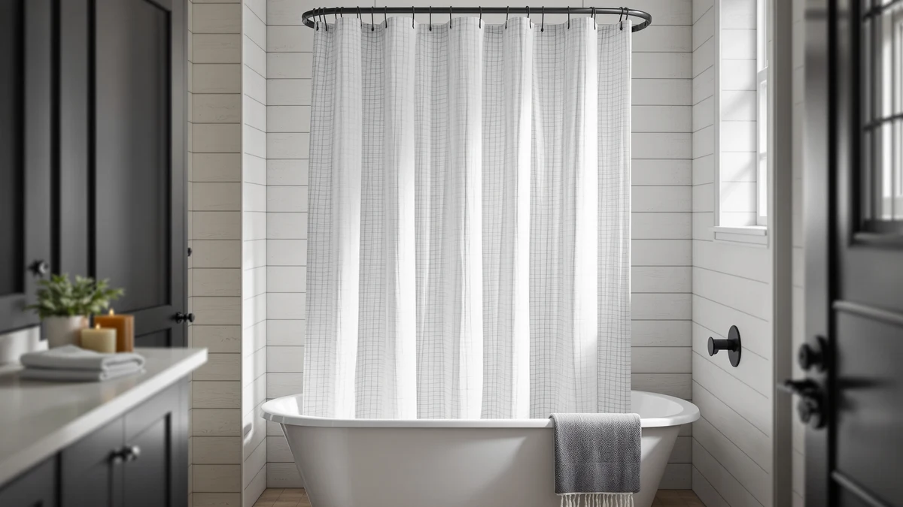

Best Shower Curtains for Wet Rooms (2026)
Prices and picks verified as of September 2026. Independent, reader-supported reviews.


Quick Answer
The best shower curtains for wet rooms combine a fully waterproof PEVA or vinyl build with a weighted or magnetic hem, since there is no tub wall or curb to hold water back on its own. The Amazon Basics Bathroom Shower Curtain covers that job for most wet rooms at a price that makes replacing it painless, while the picks below cover extra length, decorative prints, and stronger anchoring for bigger openings.
Our pick: Amazon Basics Bathroom Shower Curtain, $8.99 Check Price on Amazon
Bottom line: our top pick is the Amazon Basics Bathroom Shower Curtain at $8.99. The best budget option is the N&Y HOME Fabric Shower Curtain Liner Solid White with Magnets at $7.99.
Things to Know Before You Buy
- No curb means no free anchor. A wet room has nothing to tuck the curtain hem behind, so a weighted or magnetic bottom edge does the job a tub wall would normally handle.
- PEVA beats vinyl for daily use. PEVA liners skip the chemical smell that heavier vinyl curtains carry out of the package and dry faster between showers, which matters in a room that stays damp longer.
- Size the curtain to the wet zone, not the rod. A standard 72-by-72-inch curtain fits most stalls, but tall showerheads or wider wet room footprints call for an extra-long or extra-wide option like the Mrs Awesome pick below.
- Grommets take the daily wear. Rustproof metal grommets outlast the punched plastic holes on cheaper curtains, which tear out within a few months of regular use.
- Plan on replacing it. Even a well-reviewed PEVA curtain clouds and can develop mildew over time, so budget on swapping a budget liner every six to twelve months.
The best shower curtains for wet rooms need to do more than look good hanging on a rod. A wet room by design has no shower pan, no curb, and often no separate glass enclosure, so the curtain is the only thing standing between the spray and the rest of the floor. Pick the wrong one, thin plastic, flimsy grommets, no weight in the hem, and water finds its way past it within the first week.
Waterproof flooring and a central drain reduce the damage a stray splash can do, but they do not stop water from traveling if the curtain billows inward or leaves a gap at the bottom. You still want a curtain built for constant water contact: PEVA or vinyl material that will not seed mold, a weighted or magnetic hem that holds its position without a tub wall to lean on, and sizing that actually covers the wet zone instead of the standard shower opening.
We compared specs, pricing, and verified owner reviews across dozens of shower curtains to find seven that hold up in a wet room. The Amazon Basics Bathroom Shower Curtain is our pick for most people at $8.99, with the Barossa Design liner for a heavier weighted hem, the Mrs Awesome Extra Long for tall stalls, and four more picks below for pattern, color, and budget.
Why You Should Trust Us
Ilane Tall covers bathroom fixtures and textiles for Best Shower Curtains, focusing on products people install and rely on daily rather than once-off purchases. We do not run a fake testing lab or claim to own every curtain we cover. Instead we research specs, pricing history, and verified owner reviews from major retailers, then cross-check the pattern of complaints and praise against what a wet room actually demands: waterproof material, an anchored hem, and sizing that fits an open layout. Every pick on this page for the best shower curtains for wet rooms is backed by a real, currently available listing with a documented review count.
How We Picked
We started by narrowing the field to curtains built from PEVA or vinyl, since fabric alone soaks through and needs a separate liner underneath, an extra cost and an extra thing to wash in a wet room. From there we filtered for a weighted, magnetic, or reinforced hem, because a light hem billows the moment a wet room's open layout creates airflow. We also required a rating of at least 4.5 stars and a review count in the thousands, since a small sample size cannot tell you how a curtain holds up after a year of daily contact with water. Price mattered too: every pick here costs less than $23, keeping the total cost of outfitting a wet room reasonable even with a spare on hand.
How We Compared
We do not run a fake testing lab, so we compared these seven shower curtains against each other on the factors that matter in a wet room instead: material and lining, hem weight or magnet placement, panel size against standard and extra-long dimensions, price per square foot of coverage, and grommet construction. We then weighed that against the pattern in verified owner reviews, looking specifically for repeated mentions of billowing, mildew, odor, or grommet failure rather than one-off complaints. Reviewers consistently note that a weighted or magnetic hem cuts down on the inward pull a wet room's open airflow creates, which is why we favored picks that include one wherever the price allowed it.
Our Picks

Amazon Basics Bathroom Shower Curtain
What we like
- Standard 72-by-72-inch PEVA panel that fits most wet room openings without alterations
- 4.6 stars across more than 45,000 verified reviews, the deepest track record in this roundup
- Priced low enough at $8.99 to keep a spare on hand for quick swaps
- Rustproof grommets that owners report hold up to daily sliding on the rod
Flaws but not dealbreakers
- No weighted or magnetic hem, so it can billow in a wet room with strong airflow
- Some reviewers note a faint plastic smell that fades after a day of airing out
- Basic PEVA build without the reinforced feel of pricier options
| Material | Polyester / PEVA |
| Size | 72x72 |
The Amazon Basics Bathroom Shower Curtain earns the top spot for the best shower curtains for wet rooms by covering the essentials without asking you to spend much or think much. At $8.99 for a standard 72-by-72-inch panel, it costs less than a dinner out, which makes replacing it every six to twelve months an easy habit rather than a chore. The PEVA material is fully waterproof on its own, so it does not need a separate liner behind it, and the rustproof grommets glide on the rod through the daily open-and-close cycle a wet room sees more of than a standard shower.
Its 4.6-star average across more than 45,000 verified reviews is the largest sample in this comparison, and the pattern in that feedback is consistent: owners report it holds its shape and resists early mildew when it is left open to dry between uses. The main trade-off is weight. Without a weighted or magnetic hem, this curtain can pull inward if your wet room has a draft from a window, vent, or door gap, so if your layout is especially open, pair it with a shower curtain weight bar or step up to the Barossa Design liner below.

Barossa Design Shower Curtain Liner
What we like
- Weighted magnetic hem that owners report keeps the panel anchored against drafts
- 4.5 stars across more than 91,000 verified reviews, the largest sample in this roundup
- Standard 72-by-72-inch size fits most wet room openings
- Doubles as a liner behind a decorative curtain if you want a layered look
Flaws but not dealbreakers
- Slightly pricier than the Amazon Basics pick at $9.89
- The added weight makes it dry a touch slower between uses
- Clear finish shows water spots more readily than a printed pattern
| Material | Polyester / PEVA |
| Size | 72x72 |
The Barossa Design Shower Curtain Liner solves the one problem the Amazon Basics pick leaves open: billowing. Its hem carries embedded magnets and added weight, so in an open wet room where air moves freely between the shower zone and the rest of the bathroom, it stays pinned against the wall instead of pulling inward. At $9.89 it costs less than a dollar more than our top pick, which makes the anchoring close to free.
More than 91,000 verified reviews back a 4.5-star average, and the magnetic hem is the feature owners bring up most often as the standout over cheaper alternatives. The trade-off is minor: the extra material takes a little longer to dry than a lightweight liner, so leave it spread open rather than bunched against the wall after each use. For a wet room with a window, vent, or open doorway nearby, this is the pick worth the small premium.

AmazerBath Boho Shower Curtain Modern
What we like
- Boho print gives a wet room a decorated look instead of a purely utilitarian one
- 4.6 stars from early verified reviewers
- Water-resistant fabric dries faster than heavier textured curtains
- Standard 72-by-72-inch fit matches most rods without adjustment
Flaws but not dealbreakers
- Review count is smaller than the other picks here, so its long-term track record is thinner
- Costs roughly double the Amazon Basics pick at $17.99
- Bold pattern will not suit a minimalist bathroom
| Material | Polyester / PEVA |
| Size | 72x72 |
Most wet room curtains built for waterproofing look purely functional, and the AmazerBath Boho Shower Curtain Modern is the pick that breaks from that. The patterned design gives the room a decorated feel without asking you to trade away the water-resistant fabric a wet room requires. At $17.99 it costs more than the plain PEVA options in this list, and that premium goes toward the printed finish rather than extra hardware.
Early verified reviewers rate it 4.6 stars, and the fabric dries faster than a heavier textured curtain would, which matters in a room that stays damp longer than a standard shower. Its review count sits at just over 1,000, smaller than the tens of thousands behind our top picks, so treat the long-term durability as promising but less proven. For a wet room where you want the curtain to double as decor, it is worth the extra cost.

Dynamene Sage Green Shower Curtain
What we like
- Solid sage green tone works as a color anchor against neutral tile
- 4.6 stars across more than 22,000 verified reviews
- Moisture-resistant finish that reviewers say resists early water spotting
- Standard 72-by-72-inch sizing fits most wet room rods
Flaws but not dealbreakers
- Priced above the plain PEVA options at $15.99
- Solid color shows lint and hair more visibly than a busy pattern
- No magnetic hem, so it benefits from a weight bar in drafty layouts
| Material | Polyester / PEVA |
| Size | 72x72 |
The Dynamene Sage Green Shower Curtain fills the gap between plain white liners and busy patterns, giving a wet room a defined color without turning the space into a focal point. At $15.99 it sits in the middle of this lineup's price range, and the moisture-resistant finish keeps the waterproofing a wet room needs while still reading as a design choice rather than a purely functional liner.
More than 22,000 verified reviews back a 4.6-star average, and owners report the color holds up without fading after repeated exposure to steam and water. Because the hem is not weighted or magnetic, it can shift in a drafty wet room the way the Amazon Basics pick does, so pair it with a weight bar if your layout is especially open. For matching an existing tile scheme, this is the pick worth the added cost over a plain PEVA liner.

N&Y HOME Fabric Shower Curtain
What we like
- Soft fabric hand feel that reads warmer than a purely plastic liner
- 4.6 stars across more than 68,000 verified reviews, one of the deepest track records in this list
- Priced at $7.99, the cheapest fabric option here
- Machine washable, which simplifies the mildew-prevention routine in a wet room
Flaws but not dealbreakers
- Fabric alone is not fully waterproof, so it works best over a PEVA or vinyl liner
- Takes longer to dry than the plastic-based picks here
- No weighted hem, so pair it with a liner that includes one
| Material | Polyester / PEVA |
| Size | 72x72 |
The N&Y HOME Fabric Shower Curtain is the pick for a wet room where you already have a waterproof liner in place and want a softer, more textile look layered over it. At $7.99, it is one of the cheaper fabric curtains you will find, and its soft-touch weave feels less clinical than the plastic PEVA liners that make up most of this list.
Its 4.6-star average across more than 68,000 verified reviews is among the strongest in this comparison, and the fabric is machine washable, which makes the periodic mildew-prevention wash simpler than wiping down a plastic liner. The catch is that fabric alone will not keep a wet room dry: pair it with the Barossa Design or Amazon Basics liner behind it rather than hanging it solo. Used that way, it gives you the fabric look without giving up the waterproofing a wet room demands.

Mrs Awesome Extra Long Shower
What we like
- 72-by-84-inch panel covers tall stalls and ceiling-mount rods that a standard curtain leaves short
- 4.5 stars across more than 29,000 verified reviews
- Weighted hem that owners report resists inward pull despite the taller panel
- Same $7.99 price as the standard-length picks in this list
Flaws but not dealbreakers
- Only useful if your rod height actually calls for the extra 12 inches, otherwise it will pool on the floor
- The taller panel takes up more storage space when removed for washing
- Fewer color options than the standard-size picks here
| Material | Polyester / PEVA |
| Size | 72x84 |
A wet room with a rainfall showerhead or a ceiling-mounted rod often sits taller than a standard 72-inch curtain can cover, and that gap is exactly what lets water escape past the bottom hem. The Mrs Awesome Extra Long Shower curtain runs 72 by 84 inches, 12 inches taller than the rest of this list, so it reaches the floor instead of stopping short. At $7.99, it costs the same as the standard-size budget pick, which makes it an easy swap once you know your rod height calls for it.
More than 29,000 verified reviews back a 4.5-star average, and the weighted hem keeps the taller panel from swinging the way an unweighted extra-long curtain would. If your rod sits at a standard height, skip this one: the extra length will pool on the floor and trap moisture underneath. But for a tall wet room stall, it solves a problem none of the standard-size picks here can.

SKL Home The World Map
What we like
- World map print gives a wet room a distinct, wipeable focal point
- 4.6 stars across nearly 3,000 verified reviews
- Fabric surface owners describe as easy to spot-clean between washes
- Doubles as a talking point in a guest bathroom or rental
Flaws but not dealbreakers
- The highest price in this roundup at $22.99
- Runs 70 inches wide instead of the standard 72, so it can leave a slight gap on a wider rod
- Smallest review count of the picks here, so its long-term wear is less established
| Material | Polyester / PEVA |
| Size | 70x72 |
Not every wet room needs to disappear into the background, and the SKL Home The World Map curtain is the pick for anyone who wants the shower zone to double as a design statement. At $22.99 it is the priciest option in this comparison, and that cost buys a printed map graphic that reviewers describe as a standout in guest bathrooms and rental units where a plain liner would feel forgettable.
Nearly 3,000 verified reviews back a 4.6-star average, with owners consistently noting how easy the surface is to wipe down between washes. Its 70-inch width runs 2 inches narrower than the standard 72-inch panels elsewhere in this list, so measure your rod before buying if your wet room opening runs on the wider side. For a space where personality matters as much as waterproofing, it earns its place in this lineup.
Quick Comparison
| Product | Material | Price | Rating | Best for | Get it |
|---|---|---|---|---|---|
| Amazon Basics Bathroom Shower Curtain | Polyester / PEVA | $8.99 | 4.6 | Most wet rooms on a budget | View on Amazon → |
| Barossa Design Shower Curtain Liner | Polyester / PEVA | $9.89 | 4.5 | Anchored fit against drafts | View on Amazon → |
| AmazerBath Boho Shower Curtain Modern | Polyester / PEVA | $17.99 | 4.6 | Decorative boho pattern lovers | View on Amazon → |
| Dynamene Sage Green Shower Curtain | Polyester / PEVA | $15.99 | 4.6 | Color-coordinated wet rooms | View on Amazon → |
| N&Y HOME Fabric Shower Curtain | Polyester / PEVA | $7.99 | 4.6 | Fabric layer over a liner | View on Amazon → |
| Mrs Awesome Extra Long Shower | Polyester / PEVA | $7.99 | 4.5 | Tall stalls needing extra drop | View on Amazon → |
| SKL Home The World Map | Polyester / PEVA | $22.99 | 4.6 | Playful novelty print | View on Amazon → |
What makes a shower curtain suitable for a wet room?
A wet room curtain needs a fully waterproof PEVA or vinyl build like the Amazon Basics or Barossa Design picks above, a weighted or magnetic hem so it does not billow into the dry side of the room, and rustproof grommets that survive daily…
Do I need a weighted hem for a wet room shower curtain?
Yes, in most layouts.
The Competition
We ruled out plain fabric curtains sold without any waterproof backing early in the search for the best shower curtains for wet rooms. Fabric alone soaks through within minutes and needs a separate PEVA or vinyl liner underneath, which doubles the cost and adds a second item to wash and replace. That is why the N&Y HOME pick above is positioned as a layering option rather than a standalone choice.
We also passed on heavy-gauge vinyl curtains that score well on durability specs but consistently draw complaints about a persistent chemical odor that lingers well past the first week of use, longer than the PEVA options in this list take to air out. Ultra-cheap PEVA curtains with punched plastic grommet holes instead of reinforced metal rings were another category we excluded, since reviewers report those holes tearing within a few months of the daily sliding a wet room's curtain sees more of than a standard shower.
Frequently Asked Questions
What makes a shower curtain suitable for a wet room?
A wet room curtain needs a fully waterproof PEVA or vinyl build like the Amazon Basics or Barossa Design picks above, a weighted or magnetic hem so it does not billow into the dry side of the room, and rustproof grommets that survive daily contact with standing water and steam.
Do I need a weighted hem for a wet room shower curtain?
Yes, in most layouts. Wet rooms have no curb or tub wall to trap the curtain, so a weighted or magnetic hem, like the one on the Barossa Design liner, is what keeps it pinned in place against the draft and prevents water from sliding underneath onto heated flooring.
How often should I replace a shower curtain in a wet room?
Plan on replacing a budget PEVA curtain every six to twelve months and a heavier weighted or fabric curtain every one to two years, since wet rooms stay damp longer than a standard shower and accelerate mildew buildup even on the best-rated picks here.